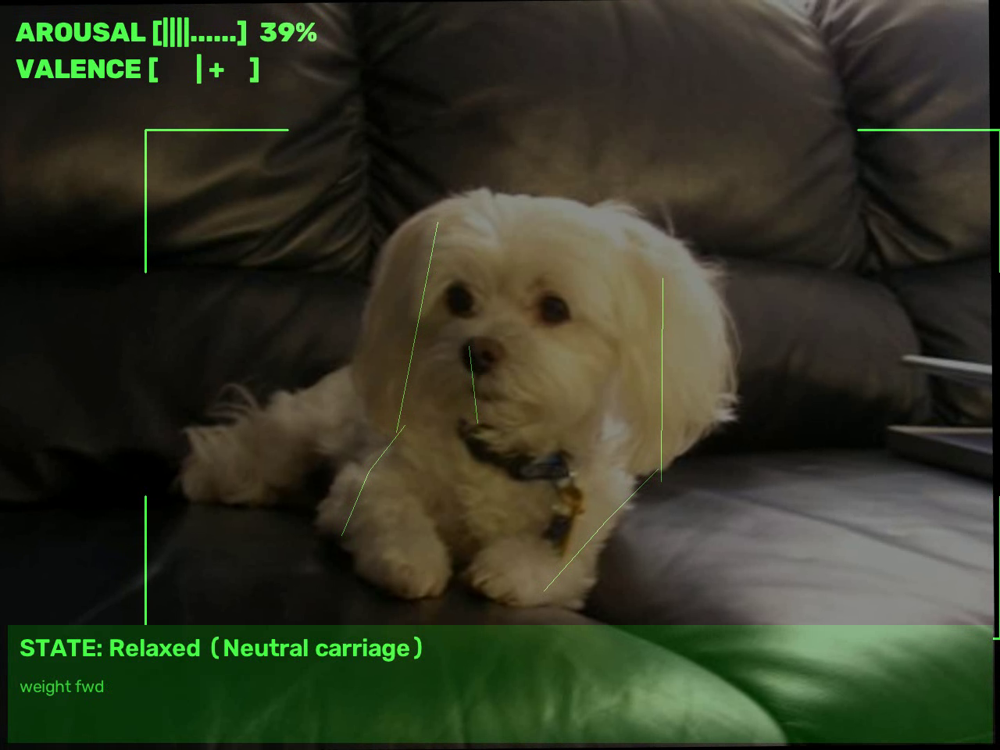
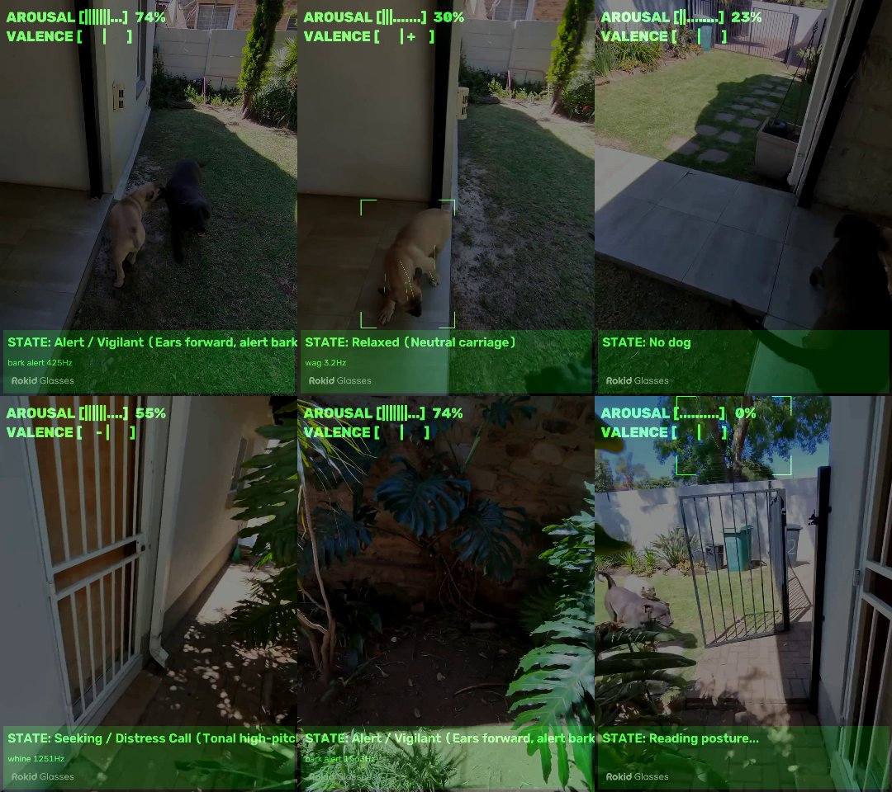
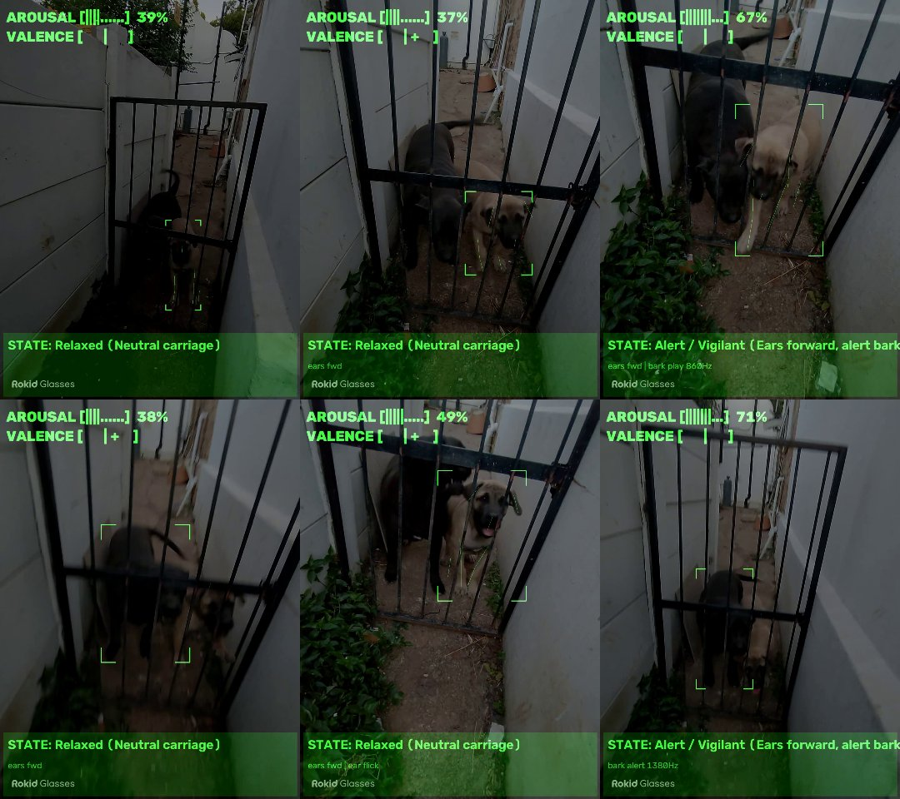
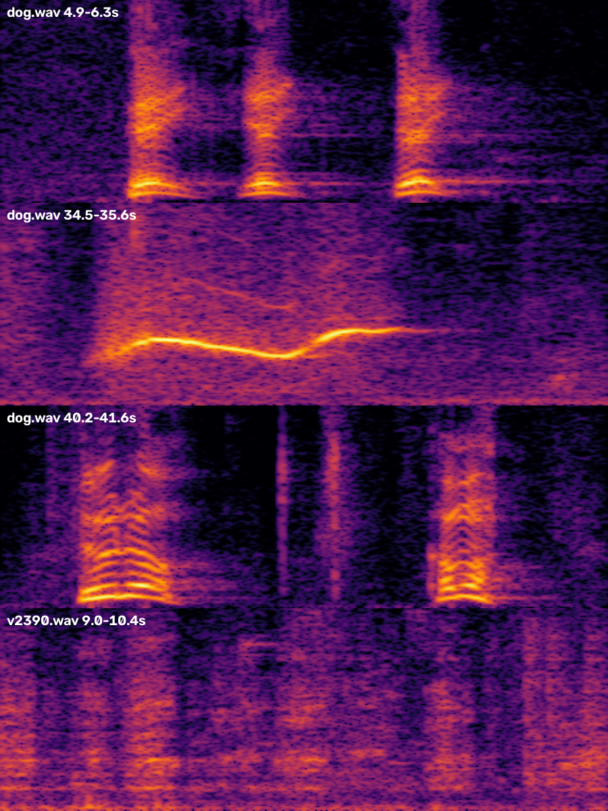

| 1 | Document control | |
| 2 | Purpose and design principle | |
| 3 | System architecture | |
| 4 | Visual kinematics | |
| 5 | Bioacoustic analysis | |
| 6 | Neuro-symbolic fusion | |
| 7 | The monochrome HUD | |
| 8 | Models and training results | |
| 9 | Running the system | |
| 10 | Interfaces and file layout | |
| 11 | Verification | |
| 12 | Field test with Rokid glasses footage | |
| 13 | Limitations and open issues | |
| 14 | Next steps |
This is an official Symbolic Synapse document for DogSense server 0.1 · glasses app 0.1.
| Field | Entry |
|---|---|
| Document | DogSense HUD: technical documentation of the canine behaviour telemetry prototype |
| Issued by | Symbolic Synapse |
| Audience | Engineers continuing the build, and reviewers assessing the prototype |
| Document version | 1.4, 22 October 2026. Version 1.1 added the first field test (section 12). Version 1.2 added the head-on and gate tests (section 12.3), the two-stage detector and the fixes they led to. Version 1.3 added the re-run of the first clip with the two-stage detector (28 % → 56 % tracked). Version 1.4 adds the sound-source gate that filters the wearer's voice (section 12.4) and the audio fixes found with it. |
| Software covered | DogSense server 0.1 (Python) · glasses app 0.1 (Android, Kotlin) |
| Hardware used | Training and inference on an NVIDIA GeForce RTX 3090 (24 GB); target display Rokid glasses |
| Status | Prototype · for review |
The document describes the solution as it stands. Every figure in section 8 was measured on this build. Re-issue with a new version number when the software, the models or the intended use change.
Dogs communicate mainly through kinematics (posture, tail-wag asymmetry, ear carriage, weight distribution) together with acoustics (pitch, inter-bark interval, harmonic-to-noise ratio). Neither channel is enough alone. A high-pitched bark can mean play solicitation or barrier frustration, depending on the body posture that goes with it.
DogSense pairs the glasses' camera and microphone with a local GPU server. It extracts both channels, fuses them with explicit rules, and projects behavioural telemetry onto the wearer's HUD in real time.
Throughout the build, three rules from the original concept were treated as requirements:
Heavy vision and audio models would hit the glasses' thermal and battery limits within minutes. The workload is therefore split: the glasses capture and display, and a local GPU server on the same Wi-Fi does all the inference.
Figure 1. Split-compute pipeline. The same server also serves a browser HUD for testing with a webcam or a video file.
| Layer | Component | Responsibility |
|---|---|---|
| Capture | Glasses app (MainActivity.kt) | Camera frames, mic PCM and head roll, streamed over Wi-Fi. Only one frame is in flight at a time, so latency never builds up. |
| Feature extraction | Server (dogsense/) | Pose estimation, kinematic features, acoustic features, neural heads |
| Semantic fusion | dogsense/fusion.py | Rule-guided decision over posture, sound and scene context |
| Display | HudView.kt / browser page | Low-latency monochrome telemetry |
The base model is Ultralytics YOLO26n-pose, fine-tuned for 60 epochs on the Ultralytics Dog-Pose dataset (6,773 training and 1,703 validation images, 24 keypoints per dog). The keypoints cover paws, knees, elbows, tail base and tip, ear bases and tips, nose, chin, eyes, withers and throat.
Horizontal-flip augmentation is used with an explicit flip_idx map, so a flipped image keeps correct left and right labels.
Second stage. The pose model misses many dogs that are facing the camera or partly hidden behind bars or fences. A general COCO detector (YOLO26s, "dog" class) therefore runs alongside it. Any dog it finds that the pose model missed is re-read by the pose model on a padded, zoomed crop. If no skeleton comes back, the dog still counts as seen and the HUD reports sound only for it.
The camera moves with the wearer's head, so screen coordinates cannot reveal subtle movements. Each skeleton is re-expressed in the dog's own body frame:
| Signal | How it is measured |
|---|---|
| Tail wag | Tail-vector angle against the spine. Frequency from zero crossings, amplitude from spread. The left/right bias is reported only in rear or front views, mirrored for front views so that "right" is always the dog's right. Right bias is associated with approach and left bias with withdrawal (Quaranta et al., 2007). |
| Play bow | Elbows and withers dropped below the hindquarters relative to gravity, scored against this dog's baseline |
| Weight shift | Spine midpoint position between rear and front paws. Computed only in lateral views where "forward" is defined. |
| Ear carriage | Ear-tip vector projected onto the head axis (nose minus ear base): forward, neutral or pinned |
| Ear flick | Largest ear-carriage change within 200 ms |
| Stiffness | Low skeletal motion energy combined with a still tail |
A dilated 1D-CNN (TemporalPoseNet) reads the same 30-frame window: 48 normalised coordinates plus 10 engineered features per frame. It outputs probabilities over six classes: relaxed, play bow, alert, defensive/stiff, anxious and excited.
The system does not run a separate breed classifier. Instead, the first ~45 neutral frames of each dog set its baseline ear carriage, front/rear height and tail set. They also classify its morphology as prick, semi or drop ears and full, docked or curled tail. A French Bulldog's ears or a Greyhound's low tail then do not read as alert or fearful. The baselines reset after the dog has been out of view for about a second.
speech_prob > 0.6 from the glasses are dropped, and long, moderately harmonic events in the adult speech range (85–255 Hz) are rejected. Sound readings arrive about 0.75 s after the sound, while the gate's window fills.| Metric | Method |
|---|---|
| Fundamental frequency (F0) | Normalised-autocorrelation peak with parabolic interpolation over voiced 64 ms frames. An octave guard takes the shortest period within 10 % of the best correlation, so the tracker does not lock onto a multiple of the true period. Atonal events (HNR < 3 dB) use the spectral peak instead, because F0 is undefined for a growl. |
| Harmonics-to-noise ratio | Boersma (1993) autocorrelation method, median over 40 ms frames, so pitch glides do not smear it |
| Inter-bark interval and burst rate | Event onsets over a 4 s window |
| Bands | Pitch: low < 300 Hz, mid, high > 600 Hz. Tonality: harsh < 3 dB, mixed, tonal > 9 dB. |
Call type is decided in two ways and combined:
The network's label is used only when its confidence is above 0.6. Otherwise the acoustic rules decide.
Pure neural classification invents intent when signals conflict. DogSense resolves conflicts with an ordered, deterministic rule base, and the first rule that matches wins:
| # | Condition | HUD state | Alert |
|---|---|---|---|
| 1 | Play bow > 0.5 and not a threat posture. Overrides any growl. | Play Solicitation | no |
| 2 | Stiff > 0.7, weight forward, and the scene trigger is a toy, food or other resource | Resource Guarding | yes |
| 3 | Stiff, weight forward, and a growl (or low-pitched bark) | Defensive Warning | yes |
| 4 | Stiff and weight forward, no sound | High Arousal / Fixated | yes |
| 5 | Ears pinned and weight back, or left-biased wag, or a whine with tense posture | Anxious / Appeasing | no |
| 6 | Whine with a loose body | Seeking / Distress Call | no |
| 7 | Wag > 1.5 Hz, loose body, not left-biased | Friendly / Excited | no |
| 8 | Bark, or ears forward with moderate stiffness | Alert / Vigilant | no |
| 9 | Dog tracked, nothing else fires | Relaxed | no |
The two example rules from the concept are implemented directly:
Play bow (Δy elbows ≫ Δy hips) ∧ growl (low F0) ⟹ Play Solicitation (safe) Stiff tail (ω_wag ≈ 0) ∧ forward weight ∧ low F0, harsh ⟹ Defensive Warning (alert)
Continuous gauges. Each rule carries a (valence, arousal) target. This target is blended with the pose network's class priors (weight 0.25) and the audio class prior (weight 0.15); the audio weight is dropped when a play bow overrides a growl. The result is boosted by burst rate and ear flicks and smoothed with an exponential moving average (α = 0.35) for a calm display.
Scene context. If a local vision-language model is running in Ollama (for example qwen2.5vl:7b), a downsampled frame is tagged every ~3 s, off the critical path. Example tags are Approaching Stranger, Other Dog, Resource/Toy and Leash Tension. The tag feeds rule 2 and shows as "TRIGGER:" on the HUD. If no VLM is reachable, it backs off for a minute.
The Rokid waveguide shows a single green channel, and black is see-through. A red-versus-green alert is impossible, so urgency is shown through form:
AROUSAL [||||||....] 65%, from calm to hyper-stimulated.VALENCE [- - - | + + +], from defensive/distressed to playful/relaxed.STATE: Play Solicitation (Bow + play growl) normally. An alert gets a boxed ALERT: Defensive Warning with an action line.
All models were trained locally on the RTX 3090. Weights are in models/.
| Model | Training data | Result (held-out data) | File |
|---|---|---|---|
| Dog pose (YOLO26n-pose), 60 epochs | Dog-Pose, real images | Box mAP50 0.991 · pose mAP50 0.936 · pose mAP50-95 0.509 | dog_pose.pt, .onnx (12.9 MB) |
| TemporalPoseNet, 40 epochs | 30,000 synthetic sequences | 98.6 % accuracy on synthetic data | temporal_pose.pt |
| VocalCNN, 30 epochs | 12,000 synthetic calls | 99.8 % accuracy on synthetic data | vocal_cnn.pt |
training/synth.py)python training/train_temporal.py --videos data/clips --init models/temporal_pose.pt # data/clips/<relaxed|play_bow|alert|defensive_stiff|anxious|excited>/*.mp4 python training/train_audio.py --data data/audio --init models/vocal_cnn.pt # data/audio/<none|growl|bark_alert|bark_play|whine|howl>/*.wav
pip install -r requirements.txt python -m server.app --host 0.0.0.0 --port 8765 # add --vlm qwen2.5vl:7b if Ollama is running
GET /health reports the device and which models loaded. Measured round trip on the RTX 3090 over localhost: 37.8 ms median, 82.7 ms p90 per frame.
Open http://localhost:8765/. Choose Start webcam + mic or Open video file, and tick skeleton for the keypoint overlay. The page uses the same wire protocol as the glasses and draws the same HUD. It processes live and saves nothing.
python tools/simulate.py --video my_dog.mp4 --wav my_dog.wav --skeleton --out hud_output.mp4
For best results, film 10–30 s of the dog at eye height, side-on, with the whole dog in frame and sound on. Allow about 3 s for calibration.
cd android ./gradlew assembleDebug -PserverUrl=ws://<PC LAN IP>:8765/ws adb install app/build/outputs/apk/debug/app-debug.apk
Behind a TLS-inspecting proxy, set GRADLE_OPTS=-Djavax.net.ssl.trustStoreType=Windows-ROOT. Python uses the truststore package for the same reason.
/ws, little-endian)| Message | Layout | Notes |
|---|---|---|
| Video frame | 0x01 | f64 unix_ts | f32 head_roll_rad | JPEG | The server answers each frame. Frames are dropped while the GPU is busy. |
| Audio chunk | 0x02 | f32 speech_prob | PCM16 mono 16 kHz | Telemetry is also pushed after audio, at up to 10 Hz |
| Telemetry (JSON) | state, detail, alert, trigger, cues[], arousal 0..1, valence −1..1, confidence, box[4], kpts[24][3], morph, kin{}, audio{}, pose_probs{}, latency_ms | |
| Path | Contents |
|---|---|
dogsense/ | keypoints, kinematics, acoustics, models, morphology, fusion, vlm, pipeline |
server/ | app.py (FastAPI: /, /health, /ws) and static/index.html (browser HUD) |
training/ | train_pose.py, train_temporal.py, train_audio.py, synth.py, dog-pose-flip.yaml |
tools/ | simulate.py (desktop HUD) and ws_client_test.py (glasses emulator) |
android/ | MainActivity, DogSenseClient, HudView, Telemetry, SpeechGate |
models/, tests/, runs/ | Trained weights, the pytest suite and the training logs |
| Check | Result |
|---|---|
Unit tests (pytest tests), including the sound-only labelling rule and the sound-source gate (human runs rejected, dog calls kept): body-frame invariance to rotation, scale and shift; kinematic signatures per behaviour; play bow overrides growl; stiff + forward + growl gives a warning; resource trigger gives guarding; F0 and HNR accuracy; growl and whine pitch bands through the streaming analyser | 9 / 9 pass |
End-to-end over the real protocol (ws_client_test.py, Dog-Pose validation images plus synthetic growl) | Dog detected in every frame; growl identified at 181–197 Hz; median 37.8 ms |
| Desktop simulator on a 60-frame head-sway clip | HUD renders; state settles to Relaxed (Figure 2) |
Android build (assembleDebug) | Builds successfully |
Browser HUD at / | Page loads and connects. Webcam and file input not yet exercised. |
| Rokid glasses footage, processed offline (section 12) | Done. Live streaming from the glasses not yet tested. |
Defects found and fixed during verification:
Section 12 lists four further defects found with real glasses footage, all fixed in this version.
The first real-world test used a 61-second clip filmed through Rokid glasses on 22 October 2026. The clip shows two dogs in a garden, with barking and whining. It was processed offline by the desktop simulator, which runs the same pipeline and models as the live server.
| Item | Detail |
|---|---|
| Source | 2400 × 1800 H.264 at 30 fps, rotated 90°, with AAC audio. Converted to 960 × 1280 upright video and 16 kHz mono audio. |
| Command | simulate.py --video dog.mp4 --wav dog.wav --skeleton --out … --log telemetry.jsonl |
| Processing time | 1,830 frames in about 100 s on the RTX 3090 (offline, every frame processed) |
| Outputs | DogSense_HUD_test.mp4 (HUD video with original sound) and data/test/telemetry.jsonl (per-frame readings) |

| Time | Main HUD state | Cues measured |
|---|---|---|
| 6–7 s, 12 s, 30–45 s | Alert / Vigilant | Alert-type barks at about 270–490 Hz, and higher calls |
| 24–37 s, 48 s | Seeking / Distress Call | Tonal whines at about 1,200–1,600 Hz |
| 9 s, 15 s, 54 s | Relaxed | Tail wag 1.5–3 Hz, ears forward or pinned |
| 51 s | Friendly / Excited | Wagging with barking |
| Whole clip | No alerts | No stiff, forward-weighted posture with a growl was seen |
A dog was first tracked in 522 of 1,830 frames (28 %). After the two-stage detector was added (section 12.3), the same clip was re-processed and a dog was tracked in 1,031 of 1,830 frames (56 %). For much of the clip the camera points at the garden, gate or plants, so the remaining "No dog" frames are mostly correct. The labels have not yet been checked against a person's judgement of what the dogs were doing.
| Defect | Cause | Fix |
|---|---|---|
| False "Play Solicitation (bow)" | A dog walking toward the camera with its head down looks front-low because of perspective. A dog lying down also has a low front. | A bow now needs a side view (withers and tail base visible) and visibly standing hind legs (rear paws at least 0.3 spine lengths below the hips). |
| Stale readings | After the detector lost the dog, the last box and posture stayed on the HUD for up to 15 frames. | Posture and the reticle are shown only within 3 frames of a real detection. Otherwise the state falls back to sound only. |
| "Ear flick" almost constant | Keypoint jitter exceeded the 0.35 threshold. | Threshold raised to 0.6. |
| Bogus cue "none −5968Hz" | Parabolic peak interpolation divided by a near-zero or positive curvature. | The interpolation offset is clamped to ±0.5 samples and applied only at true peaks. No sound cue is shown for the "none" class. |
All 7 unit tests still pass after the fixes, and the clip was re-processed to confirm them: the bow and stale-state false readings are gone.
Two more clips were filmed through the glasses to test the hardest viewing conditions:

| Measure | Before | After |
|---|---|---|
| Frames with a dog tracked, IMG_2390 (gate) | 35 % | 79 % |
| Frames with a dog tracked, first field clip (garden, two dogs) | 28 % | 56 % |
| Frames with a dog tracked, IMG_2389 (fence, dogs mostly out of view) | 3 % | 6 % |
| Detector check on gate frames from 5 s on: pose model alone vs COCO detector | 28 % vs 70 % of frames. The pose model then read 73 % of the detector's crops, with a median of 14 visible keypoints. | |
| "Ear flick" cue, IMG_2390 seconds 6–9 | 82 of 90 frames | 1 of 90 frames |
| Defect | Cause | Fix |
|---|---|---|
| Dogs behind the gate not detected | The pose model loses dogs that face the camera or are broken up by bars | Two-stage detection: a COCO dog detector, then the pose model on a zoomed crop (section 4.1) |
| "Alert / Vigilant" shown for dogs out of view | Bark rules fired without any posture | Without readable posture the HUD reports only what it heard, for example "Barking (dog not in view)" or "Barking (posture unclear)", and never a behavioural state. This is covered by a new unit test. |
| "Ear flick" still near-constant head-on | Keypoint jitter in frontal views exceeded the fixed threshold | Median-of-3 smoothing. A flick must now be a 200 ms jump greater than four times the track's own jitter. |
In IMG_2390 the dogs were shown as "Alert / Vigilant" (ears forward, alert barks at about 425–1,300 Hz) while barking at the gate, and as "Relaxed" between barks. No alerts fired. These readings have not yet been checked against a person's judgement.
Reviewing the first clip, the wearer pointed out that the loud "hey, hey, hey" at about 5 s was them telling the dogs to stop. The HUD had reported it as alert barking. The existing filters missed it: each "hey" was short, loud and harmonic, so it did not match the "long speech" rule, and it was as loud as the barks of a nearby dog.

A pretrained Audio Spectrogram Transformer (AudioSet, 527 sound classes) was tested on the clip's loudest events. It scored the three "hey"s, a whistle at 34.7 s and several later sounds as human speech or whistling, and the 7.8 s bark as dog. Several "dog sounds" in the first test were therefore the wearer.
| Finding while building the gate | Fix |
|---|---|
| AST verdicts on short (0.6 s) snippets were unstable; the same "hey" scored human or dog depending on the framing | Window lengths of 0.6, 1.0, 1.5 and 2.0 s were compared on ten labelled events. A 1.5 s centred window made no wrong calls; the two "hey"s it was unsure of are caught by the speech-run rule. |
| Live-sized audio chunks (33 ms) finalised events with almost no surrounding audio, so the gate could not judge them | Events wait until their full 1.5 s window has arrived, then are cut from the rolling buffer. |
| Event detection gave different results for 33 ms and 100 ms chunks (14 vs 31 events) | The noise floor is now estimated from the last 2 s of audio. Both chunk sizes now give the same results on all three clips. |
| A synthetic whine measured at 200 Hz instead of about 1 kHz (sub-harmonic error), which put it in the speech range | Octave guard in the pitch tracker (section 5.2) |
| Result after the fixes | Detail |
|---|---|
| First clip, 5–7 s ("hey, hey, hey") | No bark cues; the HUD reads the dogs' posture (Relaxed / Friendly) |
| First clip, 30–36 s (whistle and speech) | No longer reported as whining or barking |
| Human sounds rejected per clip | First clip 44 · IMG_2389 2 · IMG_2390 4. The real barks are kept, for example 7.8 s in the first clip and the off-screen barking in IMG_2389. |
This correction came from the person wearing the glasses, who knew what had actually happened. It shows why the next step is labelling the clips against what really happened.
DogSenseClient.telemetry.jsonl to get a first real accuracy figure.temporal_pose.pt and vocal_cnn.pt and measure accuracy on a held-out set of different dogs.